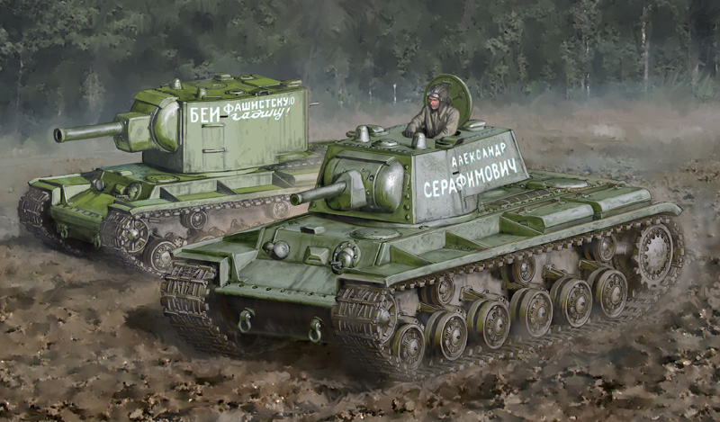

Videos and Audios of Tanks
Keep in mind some of these videos are quite loud!
A retrofitted M4A4 Sherman speeding through a street.
The Mighty King Tiger driving at a tank show.
The Last Tiger sounding great in the mud and rain.
Deafening Cannons of their respective tanks!
KV-2's 152mm Cannon
Tiger 1's 88mm Cannon

M4 Sherman's 76mm Cannon

Tiger II's 105mm Cannon

Churchill III's 57mm Cannon